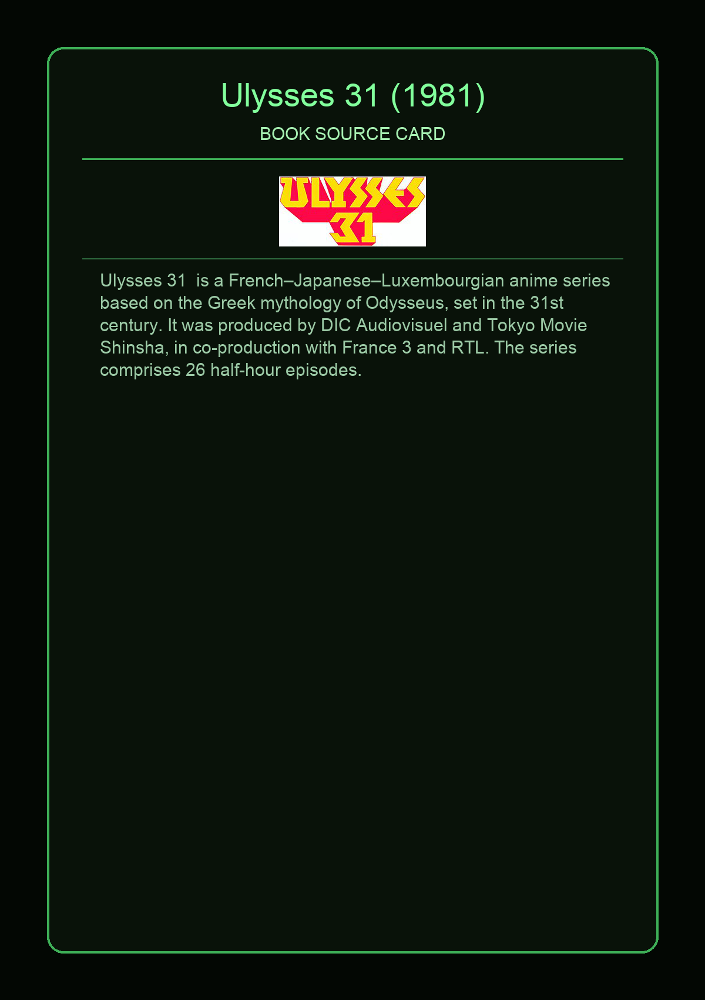
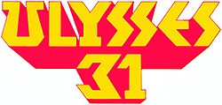

Ulysses 31 is a French–Japanese–Luxembourgian anime series based on the Greek mythology of Odysseus, set in the 31st century. It was produced by DIC Audiovisuel and Tokyo Movie Shinsha, in co-production with France 3 and RTL. The series comprises 26 half-hour episodes.
This page aggregates references to the source material behind Name Lore entries.